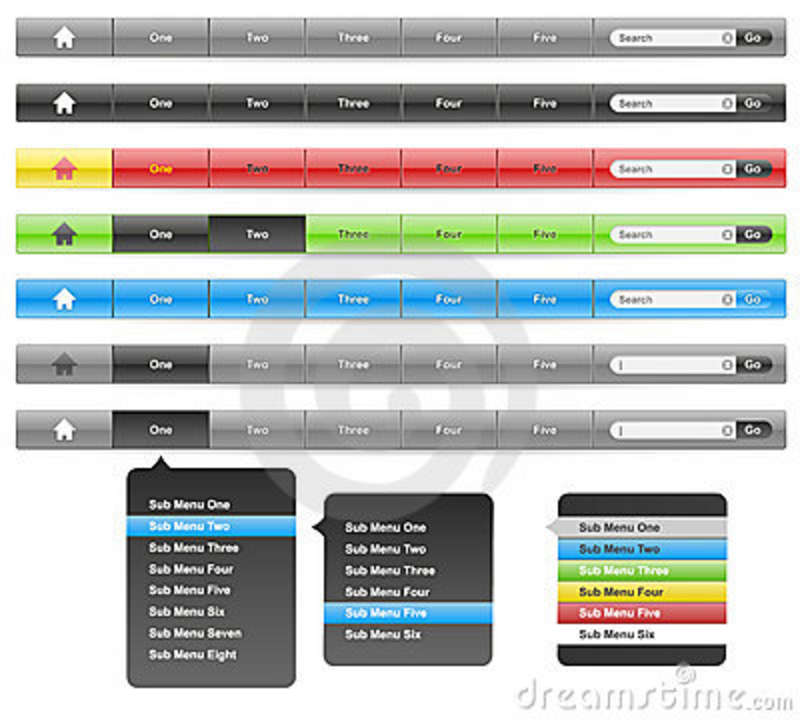

Responsive Web design (RWD) is a Web design approach aimed at crafting sites to provide an optimal viewing experience—easy reading and navigation with a minimum of resizing, panning, and scrolling—across a wide range of devices (from mobile phones to desktop computer monitors).
A site designed with RWD adapts the layout to the viewing environment by using fluid, proportion-based grids, flexible images, and CSS3 media queries, an extension of the @media rule.
Audience and Device Aware is an approach aimed at ensuring that a site is optimised to deliver what a user wants and that works effectively on the device being used to access the site. Unlike Responsive web design (RWD), which crafts a site visually for a range of devices, ADA aims to reflect the many different elements that enhance and impact on the performance and usability of a site. The predominant application for the ADA approach is for mobile and smaller screen devices. The principle truly sees the adoption of a “mobile first” strategy and focuses on the performance of a site and value that it delivers to a user and the business.
"Mobile first", unobtrusive JavaScript, and progressive enhancement (strategies for when a new site design is being considered) are related concepts that predated RWD: browsers of basic mobile phones do not understand JavaScript or media queries, so the recommended practice is to create a basic web site, and enhance it for smart phones and PCs—rather than try graceful degradation to make a complex, image-heavy site work on the most basic mobile phones.
Where a web site must support basic mobile devices that lack JavaScript, browser ("user agent") detection (also called "browser sniffing"), and mobile device detection[16][19] are two ways of deducing if certain HTML and CSS features are supported (as a basis for progressive enhancement)—however, these methods are not completely reliable unless used in conjunction with a device capabilities database.
For more capable mobile phones and PCs, JavaScript frameworks like Modernizr, jQuery, and jQuery Mobile that can directly test browser support for HTML/CSS features (or identify the device or user agent) are popular. Polyfills can be used to add support for features—e.g. to support media queries (required for RWD), and enhance HTML5 support, on Internet Explorer. Feature detection also might not be completely reliable: some may report that a feature is available, when it is either missing or so poorly implemented that it is effectively nonfunctional.